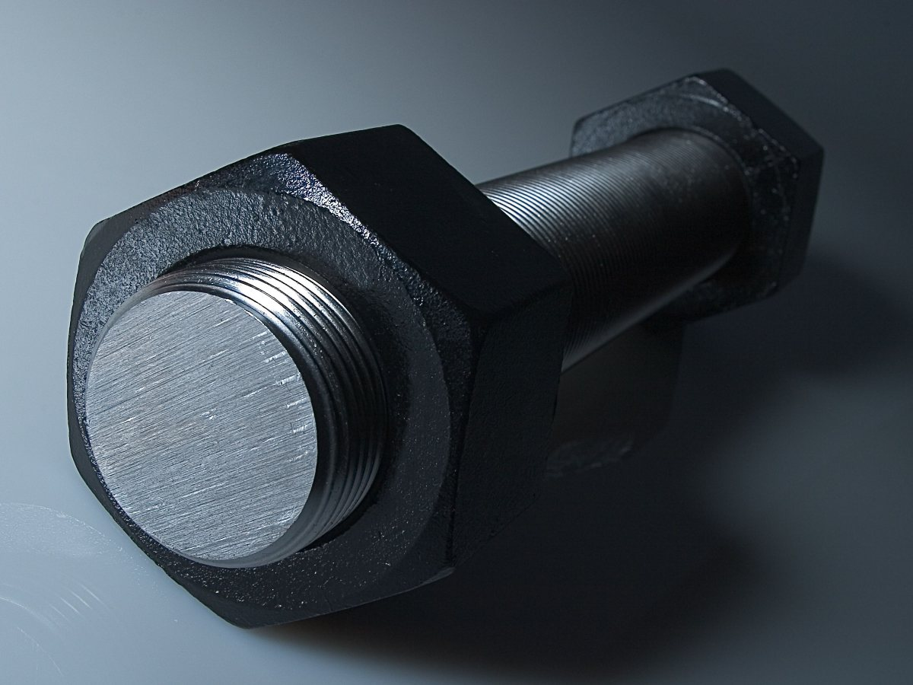
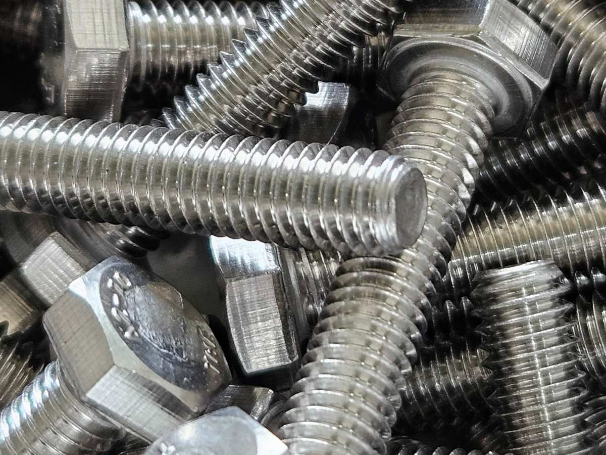
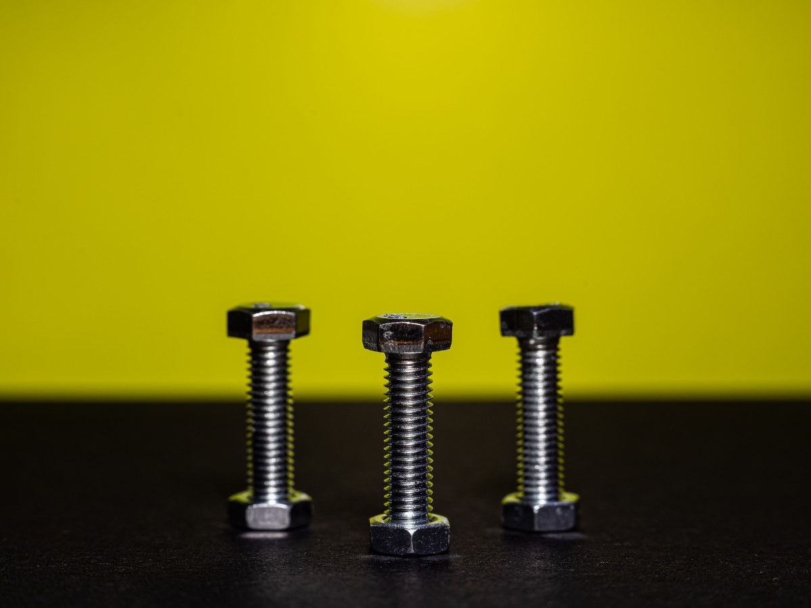
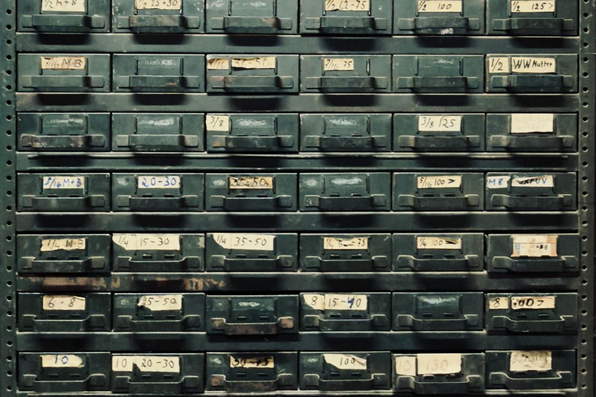
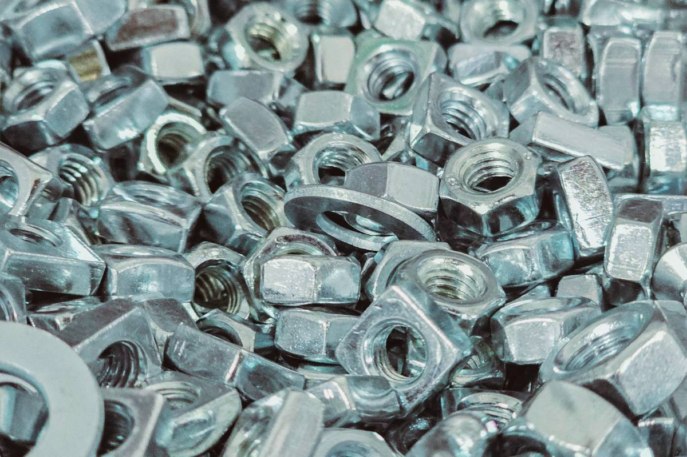
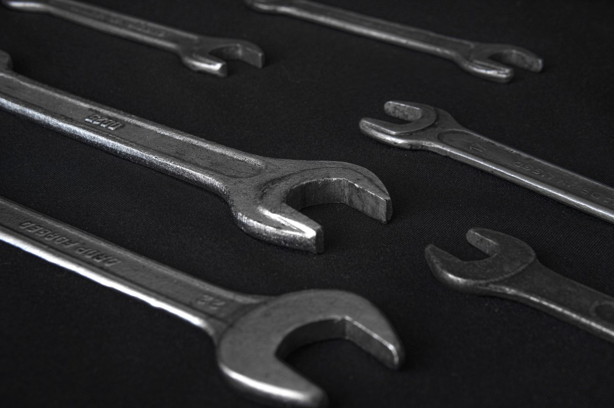
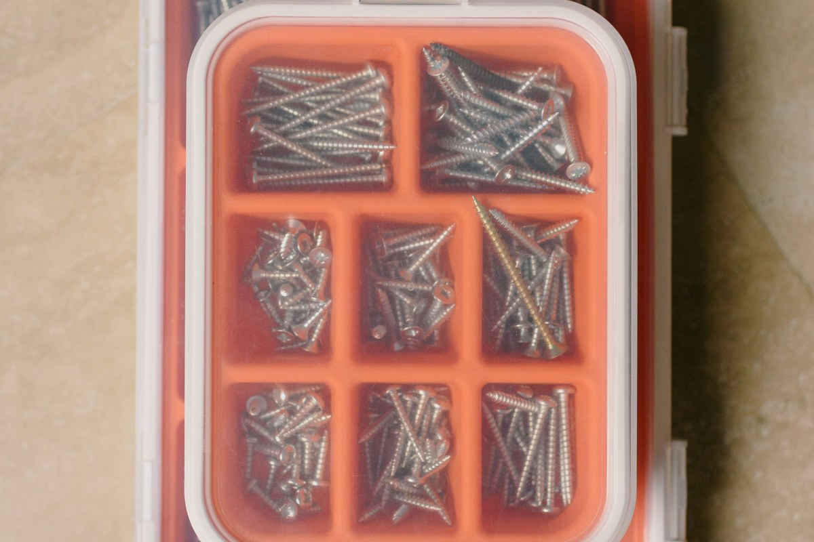

Pernería industrial · Temuco
Si existe, lo tenemos.
Métrico y whitworth. Y cuatro datos para pedirlo bien.
- 714reseñas en Google
- 4datos para pedir un perno
- 2sistemas: métrico y whitworth
- 0páginas propias donde verlo
Un minuto en vez de quince
Un perno se pide con cuatro datos
Nadie los sabe de memoria, pero con estos cuatro sale al tiro.
-

M6 · M8 · M10
El diámetro
El grosor de la rosca, no de la cabeza.
-

Paso
La rosca
Mismo grosor, otro paso: no entra.
-

Largo
Sin la cabeza
Salvo en los avellanados.
-
4.8 · 8.8 · 10.9
El grado
Va marcado en la cabeza.
Si no sabe un dato, traiga la pieza vieja.
Llame antes de recorrer media ciudad.
Si no está, pregunte igual
Las líneas
Pernos y tuercas
Hexagonal, coche, avellanado y allen.
Golillas y seguros
Planas, de presión y seeger.
Anclajes
Expansivos, químicos y tarugos.
Tornillería
Autoperforantes, madera, volcanita y zinc.
Inoxidable
Para la intemperie y el agua.
Herramienta
Llaves, dados, brocas y discos.
La gente vuelve porque acá está.
714 reseñas no se juntan con publicidad
En el mostrador
De la golilla al anclaje




Fotos de referencia: los cajones de verdad los muestra el local.
Dónde estamos
Av. San Martín 295, Temuco
- Dirección
- Av. San Martín 295, Temuco
- Teléfono
- 45 240 0800
- Reseñas
- 714 en Google
- Horario
- Falta confirmarlo
Si compra para una obra, mande la lista completa y se cotiza por ítem.
Av. San Martín 295, Temuco Abrir en Google Maps
Para el dueño
Qué es real y qué falta
Lo verificado
El nombre, la dirección, el teléfono y las 714 reseñas: de las fichas más comentadas del listado.
Lo de ejemplo
La guía de los cuatro datos y el detalle de las líneas.
Lo que falta
El horario, las condiciones para empresas y las fotos del local.